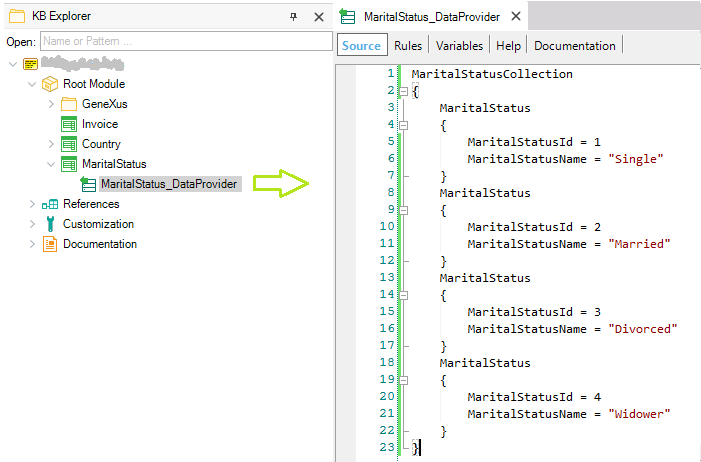

Automatic data population associated with Transactions - FAQ
Here is a list of Frequently Asked Questions about the topic Automatic data population associated with Transactions:
- In which cases GeneXus automatically set the Transaction Business Component property = True, and in which cases you can set it explicitly?
When you set the Used to property of a Transaction = Populate Data, GeneXus automatically sets the Transaction Business Component = True, in order to store the data specified in the associated Data Provider in the physical table(s) associated with the Transaction. The operation that will be performed -through the Transaction executed as a business component- is an “upsert”; that is to say, an addition will be attempted, but if it fails because a duplicate key is found, an update will be performed.
On the other hand, when you set the Used to property of a Transaction to Retrieve Data since no physical tables are created in association with the Transaction, the Business Component property remains with its default value (False). You can set it to True (Learn more about this case).
- When is the data population run?
You can find the answer in the Used to property article.
-
How can you solve the case in which a Transaction needs an autogenerated key and as the associated Data Provider is executed several times it may cause data content to be repeated?
Consider the following example, which may cause data content to be repeated:

Because the MaritalStatus Transaction has the Autonumber property set to True for MaritalStatusId attribute and the Data Provider is defined as follows:
It's never going to happen that a duplicate key is detected when an insertion is tried (because always a new identifier value is generated). So, data content may be repeated. To avoid this, an alternative may be:
1) Not to set the Autonumber property = True for the MaritalStatusId identifier attribute.
The MaritalStatus_DataProvider has to be defined as follows:

Thus, each time the MaritalStatus_DataProvider is executed, when an insertion is tried a duplicate key is detected.
2) To obtain an autogenerated key for the MaritalStatusId attribute when the MaritalStatus Transaction is executed (through its form or as a business component), you can define the following rule in the MaritalStatus Transaction (to get the primary key value with the NextNumber Procedure defined by you):
MaritalStatusId = NextNumber() if MaritalStatusId.IsEmpty() on BeforeInsert;
Procedure: NextNumber
Rule: Parm(out:&NextId);
For each MaritalStatus order (MaritalStatusId)
&NextId = MaritalStatusId + 1
exit
when none
&NextId = 1
endfor
The last thing to take into account is that the MaritalStatusId identifier attribute must be set as read-only and the MaritalStatus Transaction must be called with the different modes instantiated (for example from the corresponding Work With Web Panel). In this way, when the Transaction is executed in Insert mode, the identifier value is empty, the end-user can not enter any value to it, and the NextNumber Procedure will be executed.
Note: Remember that we recommend using the Business Component concept so that the rules defined for the Transaction are triggered. If you decide to insert using the new command, the NextNumber procedure has to be called explicitly.
| Backlinks |
| Toc:Automatic data population associated with Transactions |